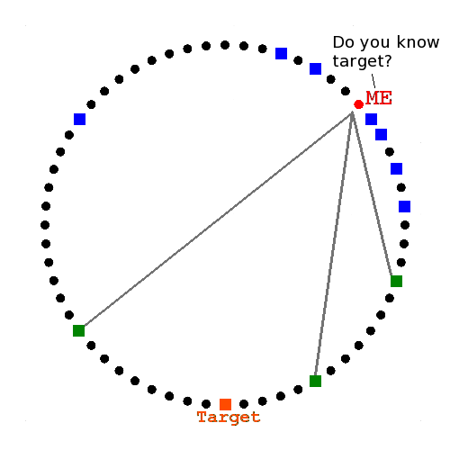
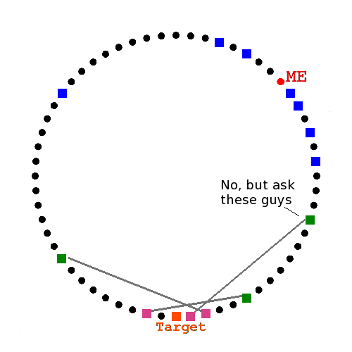

P4P2P
A Platform for Peer to Peer
Nicholas H.Tollervey, Holger Krekel
& Fabian Neumann
 ntoll.org
/
ntoll.org
/
 ntoll@ntoll.org
/
ntoll@ntoll.org
/
 @ntoll
@ntoll
merlinux.eu
/
holger@merlinux.eu
/
@hpk42
fabianneumann.de
/
mail@fabianneumann.de
/
@hellp
Can we make a small & simple framework for P2P applications?
There are two broad aspects to consider:
- Peer discovery and communication
- Application deployment and execution
Example Applications:
- Chat room (message passing)
- Resource verification / collaborative spam filtering
- A universal Key/Value store (the drogulus)
- Co-ordinating distributed computation
- Distributed file system (FUSE?/Tahoe-lafs)
- Generic resource discovery/delivery mechanism
- ???
- PROFIT!!! ;-)
Actually, peer-to-peer technology should be both attractive and viable from an economic point of view.
It should be as simple as...
from p4p2p import get_node
node = get_node()
chat_api = node.get_app("chat-1.0")
room_api = chat_api.join_room("sprint")
while True:
msg = room_api.get_next_message()
if msg:
print(msg)
A local instance of a P2P chat application is started. The "node" object represents the local machine on the global P2P network and is the reference used by all local applications to communicate with the P2P network. The "chat_api" represents the P2P chat application.
Peer Discovery & Communication
- The P2P network is a set of nodes within a key space whose size is the output range of a hashing function (e.g. SHA512).
- Each node has a unique ID that is a hash.
- A node has a position within the P2P network (derived from the value of its hash/id) allowing a notion of distance.
- Nodes track peers / position / distance in a routing table.
- There are three basic
operations:
- Add our own contact details to a set identified by a key.
- A recursive lookup used to find nodes and get sets.
- Handle messages scoped by a namespace.
- Each set's key is a hash seeded by a namespace's name.
- Nodes manage sets whose keys are close to the node's ID.
Routing Tables FTW

Me and My Routing Table

Interactions give tracking data

(ID, IP address and port etc...)
Peers stored in fixed size buckets

Buckets contain the same number of peer nodes
Buckets cover a smaller range the closer they are to the local node
Ergo, the local node knows more closer nodes
Peers stored in fixed size buckets
Ignore unresponsive peers, Refresh the Buckets, Re-publish & Cache items
(To keep the network up-to-date and responsive)
Recursive Lookup

Six degrees of separation

Ask closest known peers
They reply with closer peers
They reply with the target

Namespaces
Identify yourself to your peers and find others
Join a Namespace
from p4p2p import get_node
from hashlib import sha512
node = get_node()
key = sha512("arbitrary_namespace")
node.join_namespace(key)
Look up nodes close to the key for the namespace. Ask the nodes to add you to the namespace's set (or create a new set with just you in it).
Who's in the namespace..?
A lookup only returns the K longest lived yet still active peers known to the remote node (where K is a global replication constant - commonly set to 20).
(These are likely to be the most reliable nodes within the namespace)
Global / Namespaced Routing Tables
Reliable peers are used to seed a new routing table that only contains nodes self-identified as members.
- Apps are associated with such namespaced routing tables.
- Apps expect peers in such namespaced routing tables to have locally running instances of the app.
- Apps send and recieve app specific messages to each other via P4P2P or, if required, out of band.
- Global and namespaced routing tables keep membership in sync.
Global / Namespaced Routing Tables

Application Deployment & Execution
- Applications run locally in a sandbox.
- Can be fetched from the P2P network (or elsewhere, like PyPI).
- Have autonomy regarding API and RPC message design.
- May rely upon or re-use functionality from other apps.
- Are run independently of each other.
Image Credits
Licensed under CC BY 2.0